?plotHelp on topic 'plot' was found in the following packages:
Package Library
graphics /usr/lib/R/library
base /usr/lib/R/library
Using the first match ...?plotHelp on topic 'plot' was found in the following packages:
Package Library
graphics /usr/lib/R/library
base /usr/lib/R/library
Using the first match ...example(hist)
hist> op <- par(mfrow = c(2, 2))
hist> hist(islands)
hist> utils::str(hist(islands, col = "gray", labels = TRUE))List of 6
$ breaks : num [1:10] 0 2000 4000 6000 8000 10000 12000 14000 16000 18000
$ counts : int [1:9] 41 2 1 1 1 1 0 0 1
$ density : num [1:9] 4.27e-04 2.08e-05 1.04e-05 1.04e-05 1.04e-05 ...
$ mids : num [1:9] 1000 3000 5000 7000 9000 11000 13000 15000 17000
$ xname : chr "islands"
$ equidist: logi TRUE
- attr(*, "class")= chr "histogram"
hist> hist(sqrt(islands), breaks = 12, col = "lightblue", border = "pink")
hist> ##-- For non-equidistant breaks, counts should NOT be graphed unscaled:
hist> r <- hist(sqrt(islands), breaks = c(4*0:5, 10*3:5, 70, 100, 140),
hist+ col = "blue1")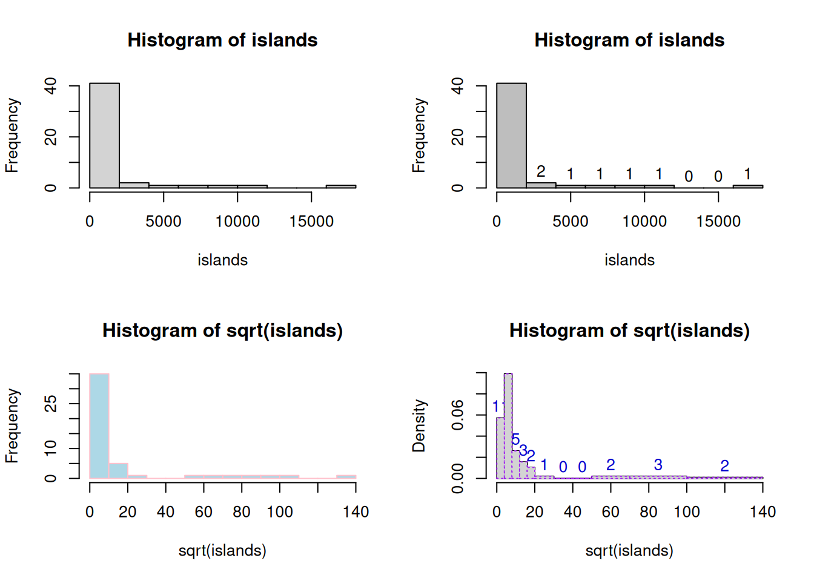
hist> text(r$mids, r$density, r$counts, adj = c(.5, -.5), col = "blue3")
hist> sapply(r[2:3], sum)
counts density
48.000000 0.215625
hist> sum(r$density * diff(r$breaks)) # == 1
[1] 1
hist> lines(r, lty = 3, border = "purple") # -> lines.histogram(*)
hist> par(op)
hist> require(utils) # for str
hist> str(hist(islands, breaks = 12, plot = FALSE)) #-> 10 (~= 12) breaks
List of 6
$ breaks : num [1:10] 0 2000 4000 6000 8000 10000 12000 14000 16000 18000
$ counts : int [1:9] 41 2 1 1 1 1 0 0 1
$ density : num [1:9] 4.27e-04 2.08e-05 1.04e-05 1.04e-05 1.04e-05 ...
$ mids : num [1:9] 1000 3000 5000 7000 9000 11000 13000 15000 17000
$ xname : chr "islands"
$ equidist: logi TRUE
- attr(*, "class")= chr "histogram"
hist> str(hist(islands, breaks = c(12,20,36,80,200,1000,17000), plot = FALSE))
List of 6
$ breaks : num [1:7] 12 20 36 80 200 1000 17000
$ counts : int [1:6] 12 11 8 6 4 7
$ density : num [1:6] 0.03125 0.014323 0.003788 0.001042 0.000104 ...
$ mids : num [1:6] 16 28 58 140 600 9000
$ xname : chr "islands"
$ equidist: logi FALSE
- attr(*, "class")= chr "histogram"
hist> hist(islands, breaks = c(12,20,36,80,200,1000,17000), freq = TRUE,
hist+ main = "WRONG histogram") # and warningWarning in plot.histogram(r, freq = freq1, col = col, border = border, angle =
angle, : the AREAS in the plot are wrong -- rather use 'freq = FALSE'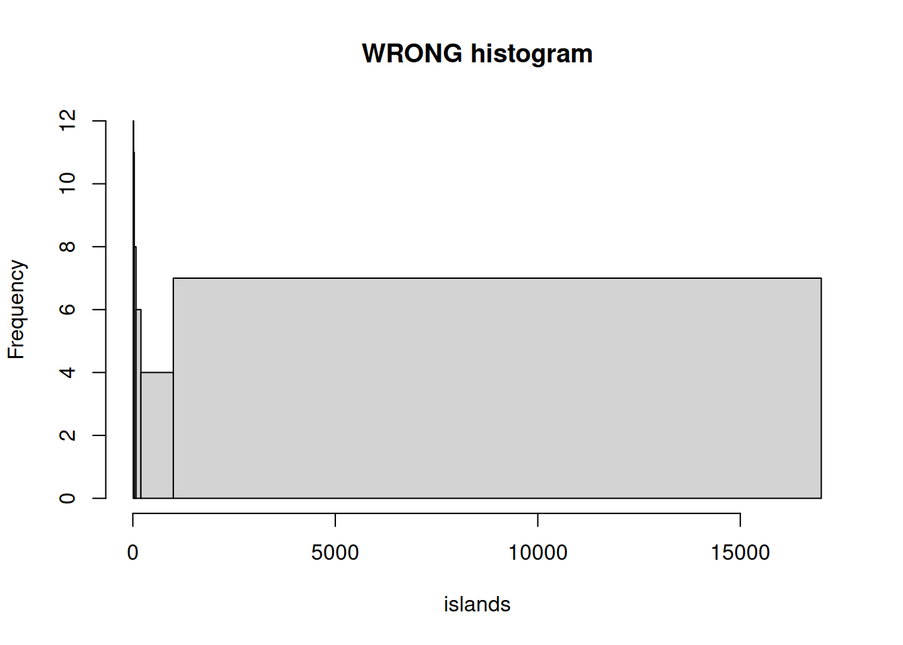
hist> ## No test: ##D
hist> ##D ## Extreme outliers; the "FD" rule would take very large number of 'breaks':
hist> ##D XXL <- c(1:9, c(-1,1)*1e300)
hist> ##D hh <- hist(XXL, "FD") # did not work in R <= 3.4.1; now gives warning
hist> ##D ## pretty() determines how many counts are used (platform dependently!):
hist> ##D length(hh$breaks) ## typically 1 million -- though 1e6 was "a suggestion only"
hist> ## End(No test)
hist> ## R >= 4.2.0: no "*.5" labels on y-axis:
hist> hist(c(2,3,3,5,5,6,6,6,7))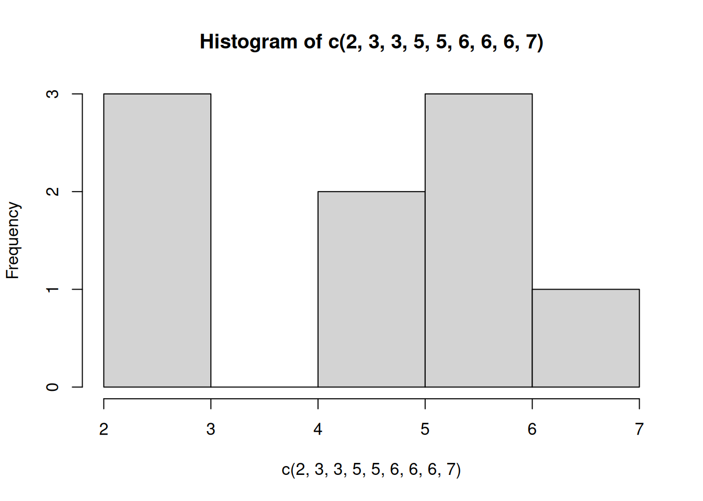
hist> require(stats)
hist> set.seed(14)
hist> x <- rchisq(100, df = 4)
hist> ## Histogram with custom x-axis:
hist> hist(x, xaxt = "n")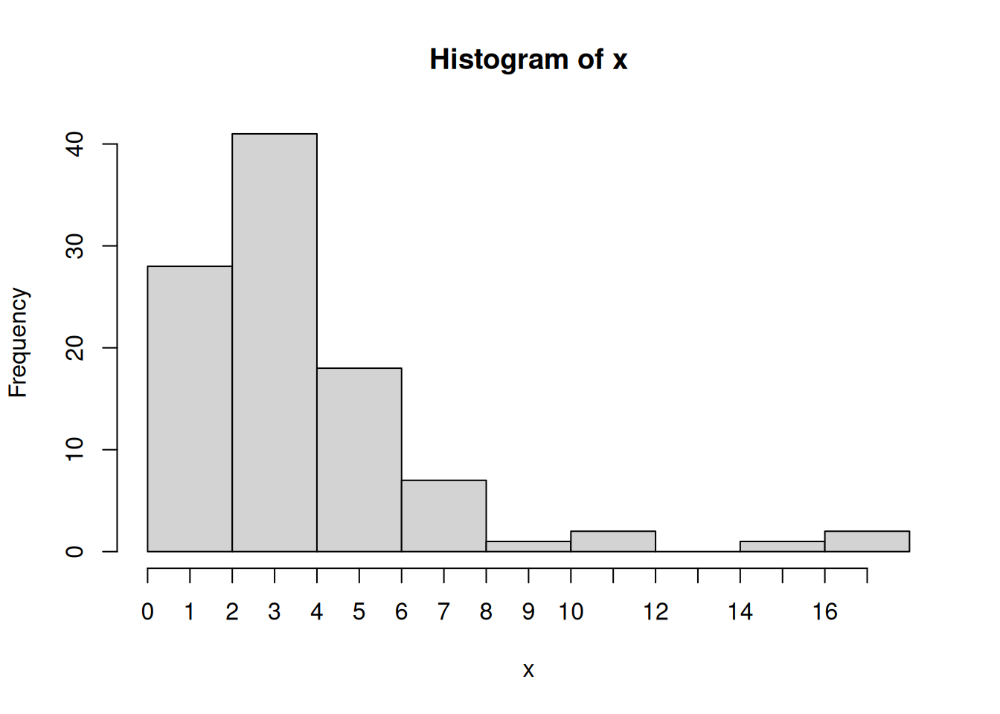
hist> axis(1, at = 0:17)
hist> ## Don't show:
hist> op <- par(mfrow = 2:1, mgp = c(1.5, 0.6, 0), mar = .1 + c(3,3:1))
hist> ## End(Don't show)
hist> ## Comparing data with a model distribution should be done with qqplot()!
hist> qqplot(x, qchisq(ppoints(x), df = 4)); abline(0, 1, col = 2, lty = 2)
hist> ## if you really insist on using hist() ... :
hist> hist(x, freq = FALSE, ylim = c(0, 0.2))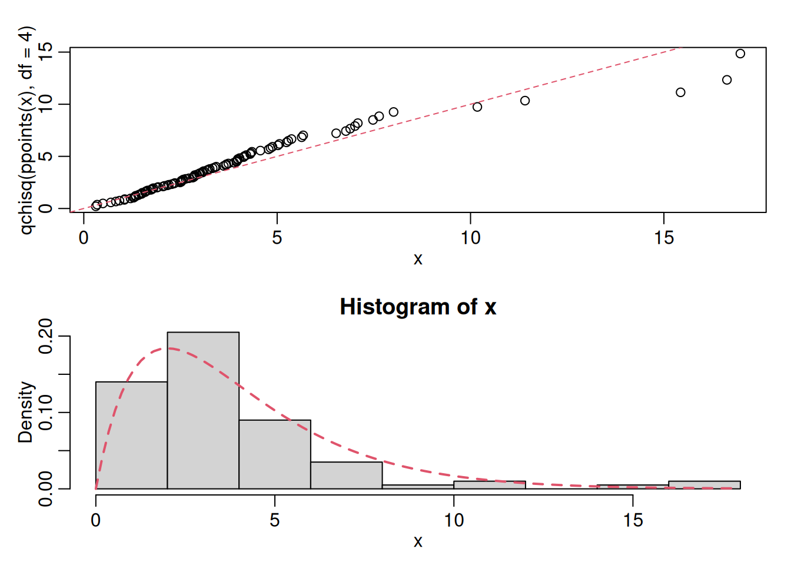
hist> curve(dchisq(x, df = 4), col = 2, lty = 2, lwd = 2, add = TRUE)
hist> ## Don't show:
hist> par(op)
hist> ## End(Don't show)
hist>
hist>
hist> Only operations with integrants are exact
u <- sqrt(2); u*u ==2[1] FALSEu*u-2[1] 4.440892e-16all.equal(u*u,2)[1] TRUEidentical(u*u,2)[1] FALSEx <- 45; y<- 50
if (x<y){
}NULLThis section gathers every code chunk (literal or recreated) from the professor PDFs under professor_notes/2semester/ASPA/R. Each small item is included as an executable R chunk with a short explanation.
Assigning values and basic types:
# assignment operator
x <- 5
x[1] 5# numeric, integer, character
x <- 4.7; x[1] 4.7y <- 1L; typeof(y)[1] "integer"z <- "Test"; typeof(z)[1] "character"# length and sequences
v <- 1:5; length(v); v[1] 5[1] 1 2 3 4 5v2 <- seq(0, 1, by = 0.25); v2[1] 0.00 0.25 0.50 0.75 1.00Explanation: ‘<-’ assigns; R has types like integer (1L), numeric, character; sequences via ‘:’ or seq().
# concatenation and named vectors
x <- c(3, 7, 9); class(x)[1] "numeric"probe <- c(4,7,6,5,6,7); length(probe)[1] 6n <- c(a = 1, b = 2, c = 3)
names(n) <- c('a','b','c')
setNames(1:3, c('a','b','c'))a b c
1 2 3 # logical indexing
x <- -5:5
l.positive <- x > 0
x[l.positive][1] 1 2 3 4 5Explanation: vectors are the basic data structure; names() and setNames help label elements; logical vectors can index.
v1 <- c(-4.5, NaN, exp(Inf))
is.nan(v1); is.infinite(v1); is.na(v1)[1] FALSE TRUE FALSE[1] FALSE FALSE TRUE[1] FALSE TRUE FALSEcolors <- factor(c('red','blue','red','green','blue'))
colors[1] red blue red green blue
Levels: blue green redsize <- factor(c('small','medium','large','medium'), levels = c('small','medium','large'))
size[1] small medium large medium
Levels: small medium large# ordered factor
grade <- ordered(c('high','low','medium','medium'), levels = c('low','medium','high'))
summary(grade) low medium high
1 2 1 Explanation: factors store categorical data; ordered factors keep a meaningful order.
counts <- c(25,12,7,4,6,2,1,0,2)
names(counts) <- 0:(length(counts)-1)
str(counts) Named num [1:9] 25 12 7 4 6 2 1 0 2
- attr(*, "names")= chr [1:9] "0" "1" "2" "3" ...# remove names
names(counts) <- NULL
l1 <- list(index = 1:3, text = "one list element")
str(l1)List of 2
$ index: int [1:3] 1 2 3
$ text : chr "one list element"Explanation: many base objects have attributes (names, dim, class) visible via attributes() and str(). Lists can hold mixed objects.
# create matrices
m1 <- matrix(1:12, nrow = 3); m1 [,1] [,2] [,3] [,4]
[1,] 1 4 7 10
[2,] 2 5 8 11
[3,] 3 6 9 12m2 <- matrix(1:12, nrow = 3, byrow = TRUE); m2 [,1] [,2] [,3] [,4]
[1,] 1 2 3 4
[2,] 5 6 7 8
[3,] 9 10 11 12# change dimensions
v1 <- 1:20; dim(v1) <- c(4,5); v1 [,1] [,2] [,3] [,4] [,5]
[1,] 1 5 9 13 17
[2,] 2 6 10 14 18
[3,] 3 7 11 15 19
[4,] 4 8 12 16 20# indexing and subsetting
(S <- matrix(1:9, nrow = 3)) [,1] [,2] [,3]
[1,] 1 4 7
[2,] 2 5 8
[3,] 3 6 9S[c(1,3), ] [,1] [,2] [,3]
[1,] 1 4 7
[2,] 3 6 9colnames(S) <- c('S1','S2','S3')
S[c(TRUE, FALSE, TRUE), c('S1','S3')] S1 S3
[1,] 1 7
[2,] 3 9# linear algebra
C <- matrix(c(1,2,4,2,1,1,3,1,2), nrow = 3)
Cinv <- solve(C); Cinv %*% C [,1] [,2] [,3]
[1,] 1 -5.551115e-17 -1.110223e-16
[2,] 0 1.000000e+00 0.000000e+00
[3,] 0 0.000000e+00 1.000000e+00# systems
(A <- matrix(c(3,1,4,2), nrow = 2)) [,1] [,2]
[1,] 3 4
[2,] 1 2(k <- matrix(c(12,8), nrow = 2)) [,1]
[1,] 12
[2,] 8(v <- solve(A,k)) [,1]
[1,] -4
[2,] 6Explanation: matrices are special vectors with dim; solve() for inverses/solving linear systems; %*% is matrix multiplication.
ar <- array(1:24, dim = c(2,4,3))
# reshape
dim(ar) <- c(4,6)# lists
l1 <- list(1:3, "one list element", matrix(1:4,2,2))
str(l1)List of 3
$ : int [1:3] 1 2 3
$ : chr "one list element"
$ : int [1:2, 1:2] 1 2 3 4# data frames
df1 <- data.frame(x = 1:3, y = letters[1:3]); attributes(df1)$names
[1] "x" "y"
$class
[1] "data.frame"
$row.names
[1] 1 2 3# data.frame with strings as factors (older behavior)
dc1 <- data.frame(exam1 = 1:3, exam2 = 4:6, channel = c('AL','MZ','AL'), stringsAsFactors = TRUE)
str(dc1)'data.frame': 3 obs. of 3 variables:
$ exam1 : int 1 2 3
$ exam2 : int 4 5 6
$ channel: Factor w/ 2 levels "AL","MZ": 1 2 1# typing numbers interactively
# numbers <- scan() # run interactively to type numbers
# save and load
nbnumbers <- rnbinom(1000, size=1, mu=1.2)
write(nbnumbers, 'nbnumbers.txt', 1)
xmat <- matrix(rpois(100000, 0.75), nrow = 1000)
write.table(xmat, 'table.txt', col.names = FALSE, row.names = FALSE)
# read.table example (from file or web)
# data <- read.table('yield.txt', header = TRUE)
# iris_data <- read.csv('https://raw.githubusercontent.com/.../iris.csv', header=TRUE)Explanation: scan(), read.table(), read.csv(), write(), write.table() are common I/O functions.
today <- Sys.Date(); today[1] "2026-03-13"yesterday <- as.Date('2026-03-09')
delta <- today - yesterday; deltaTime difference of 4 daysone_week <- as.difftime(1, units = 'weeks'); attributes(one_week)$class
[1] "difftime"
$units
[1] "weeks"t <- as.POSIXct('2026-03-10 14:30:00', tz = 'UTC'); t[1] "2026-03-10 14:30:00 UTC"next_tuesday <- Sys.time() + one_week# if-else
x <- 35; y <- 45
if (x < y) {
msg <- 'x is smaller'
} else {
msg <- 'x is not smaller'
}
msg[1] "x is smaller"# switch example
msg2 <- switch(as.character(sign(x - y)), '1' = 'x>y', '0' = 'x==y', '-1' = 'x<y')
msg2[1] "x<y"# for loop
for(i in 1:3) print(i)[1] 1
[1] 2
[1] 3# while loop
i <- 1
while(i < 4) { print(i); i <- i + 1 }[1] 1
[1] 2
[1] 3# repeat/break (already shown above)fsum <- function(x = 1, y = 2) { x + y }
fsum(3,4)[1] 7play <- function(a, b) { a * 10 }
play(2,3)[1] 20# apply examples
mat <- matrix(1:9, nrow = 3)
apply(mat, 1, sum) # row sums[1] 12 15 18lapply(list(1:3, 4:6), mean)[[1]]
[1] 2
[[2]]
[1] 5sapply(list(1:3, 4:6), mean)[1] 2 5# basic hist with bin control
hist(rnorm(1000), breaks = 20, col = 'lightblue')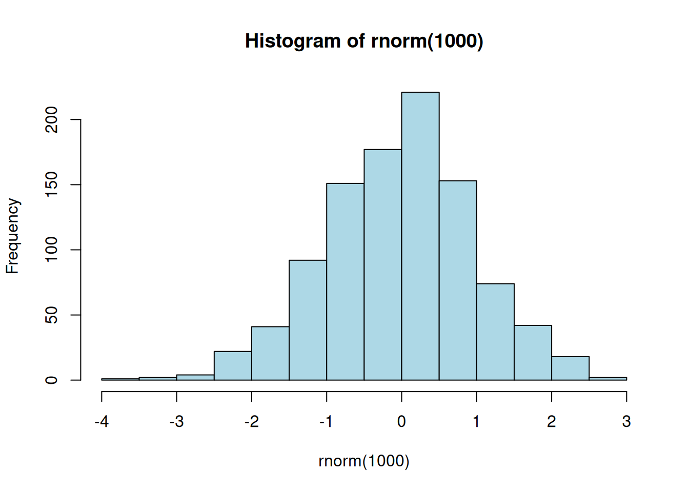
# superimpose histograms
h1 <- hist(rnorm(500), plot = FALSE)
h2 <- hist(rnorm(500, mean = 1), plot = FALSE)
plot(h1, col = rgb(0,0,1,0.5))
plot(h2, col = rgb(1,0,0,0.5), add = TRUE)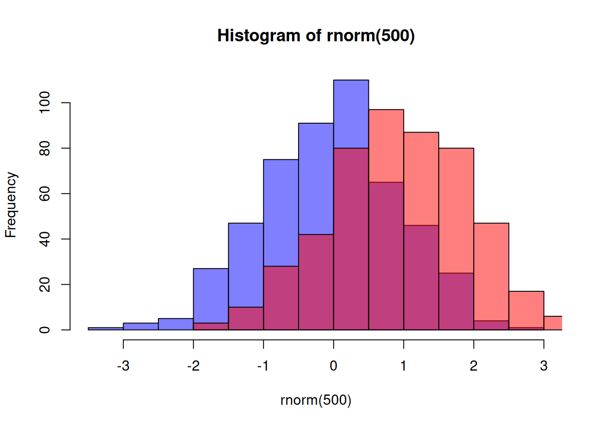
# boxplot with formula
boxplot(Speed ~ Expt, data = morley, xlab = 'Experiment #', ylab = 'Speed of Light', col = 'darkorchid2', medcol = 'white')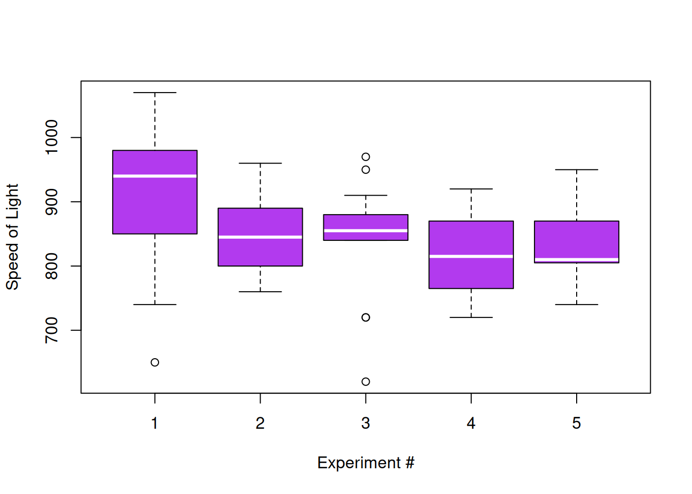
# par settings
par(las = 1)
# scatter with color mapping
set.seed(34761542)
xn1 <- rnorm(1000,1,2); xn2 <- rnorm(1000,1,3)
xcontrol <- jitter(xn1 + xn2, 2)
plot(xn1, xn2, pch = 20, cex = 1.25, col = ifelse(xcontrol > 0, 'navy', 'darkorange'), asp = 1)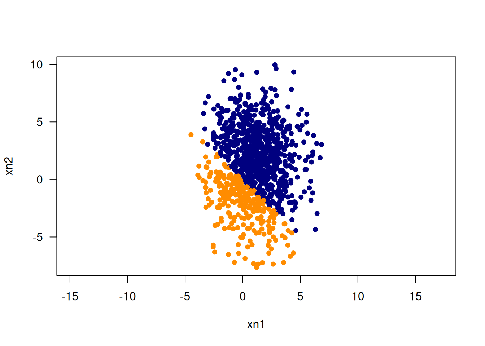
# lines, curve, abline
plot(0, 0, type = 'n', xlim = c(-pi, pi), ylim = c(-1,1), xlab = 'x', ylab = 'f(x)')
curve(sin(x), -pi, pi, col = 'red', add = TRUE)
curve(sin(x)/x, -pi, pi, col = 'navy', lwd = 2, add = TRUE)
abline(h = 0, lty = 2)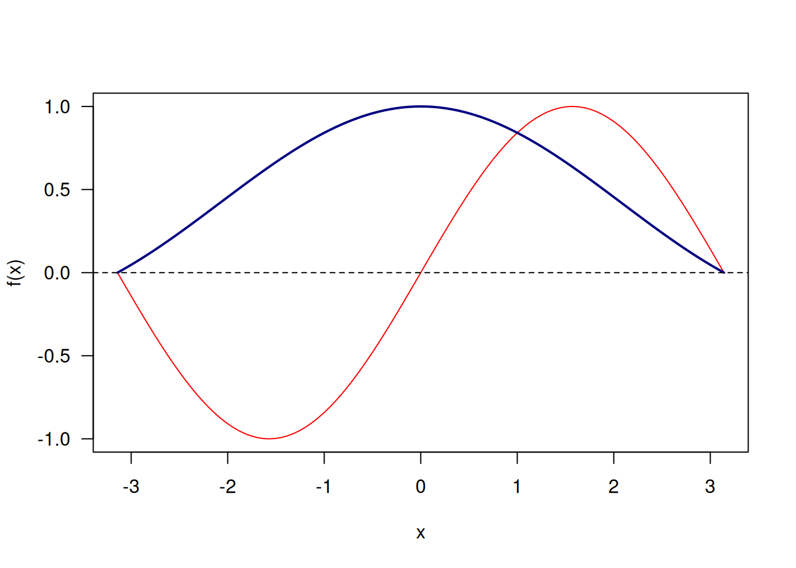
# multiple panels/layout
p_area <- matrix(c(1,1,2,2,3,3,0,4,4,5,5,5), nrow=2, ncol=6, byrow = TRUE)
layout(p_area)
for(i in 1:5){
x <- morley$Speed[morley$Expt == i]
hist(x, main = paste('Experiment', i), xlab = 'Speed of Light', col = 'lightblue', border = 'white')
}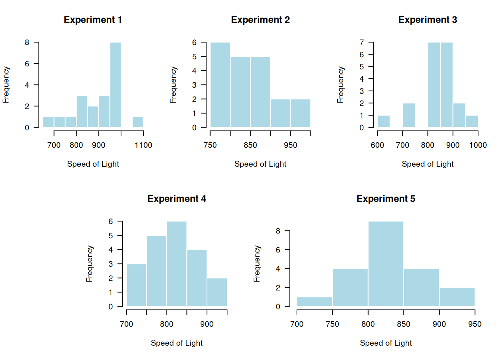
# reset layout
layout(1)Explanation: graphs can be saved to files via pdf()/png()/jpeg(); use par() to tweak parameters; use layout() or par(mfrow=) to arrange multiple plots.
library(tibble)
df <- tibble(x = 1:5, y = x^2, label = letters[1:5])
print(df)# A tibble: 5 × 3
x y label
<int> <dbl> <chr>
1 1 1 a
2 2 4 b
3 3 9 c
4 4 16 d
5 5 25 e #library(data.table)
#DT <- data.table(x = 1:5, g = c('A','A','B','B','B'))
#DT# data.frame example already shows S3 behavior
class(df1)[1] "data.frame"attributes(df1)$names
[1] "x" "y"
$class
[1] "data.frame"
$row.names
[1] 1 2 3# S3 example vectors
coord <- factor(c('Est','West','Est','North'))
class(coord)[1] "factor"Final note: the above chunks aim to include every code example (literal or reconstructed) from the provided professor PDFs. Small explanatory comments are added inline; run chunks interactively to inspect outputs and tweak as needed.